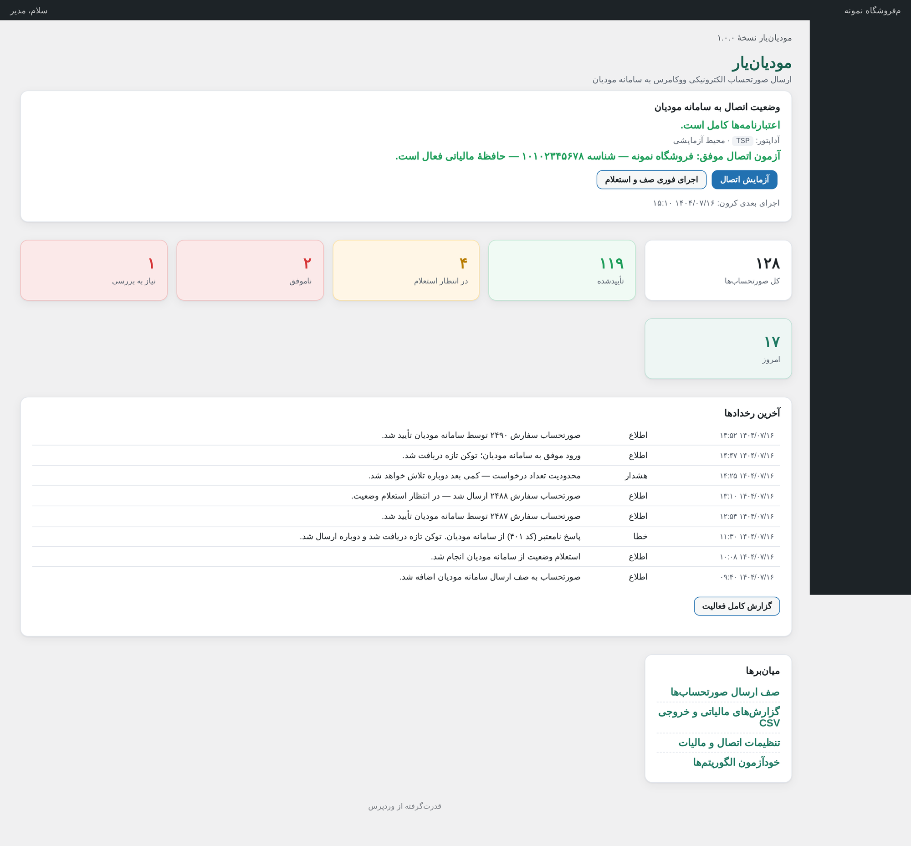
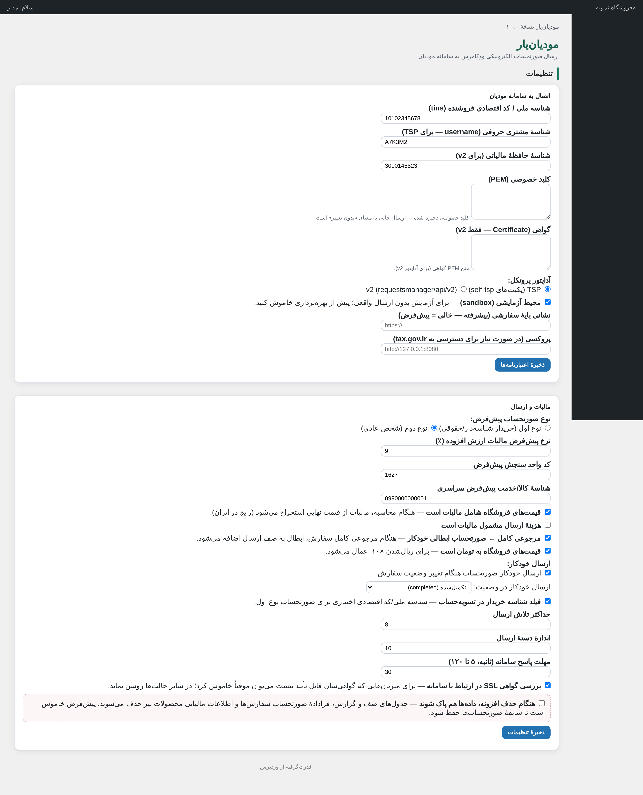
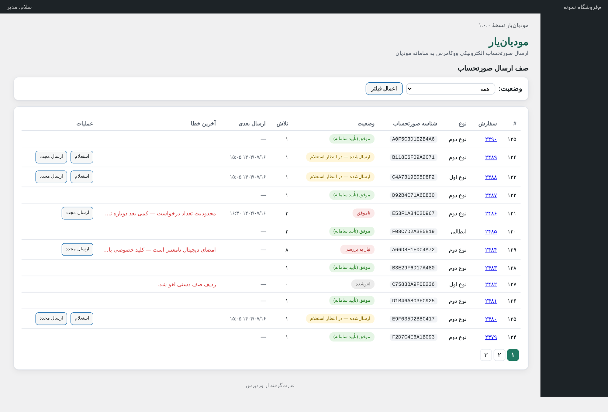
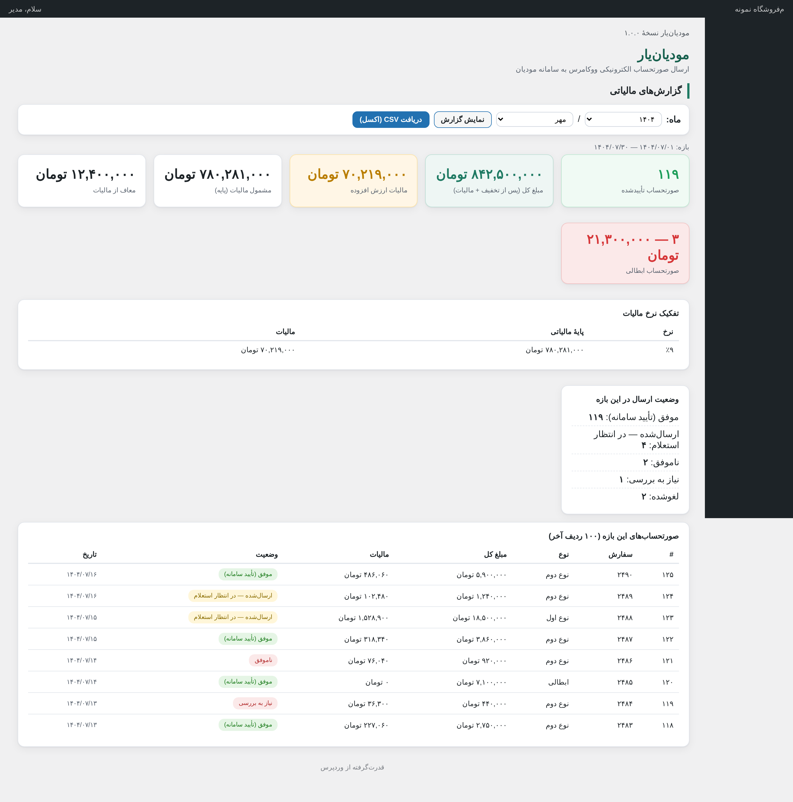
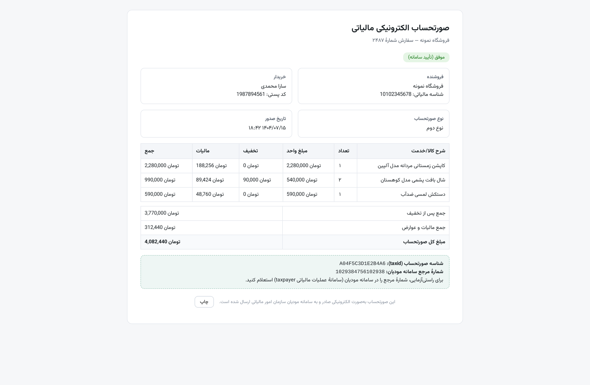
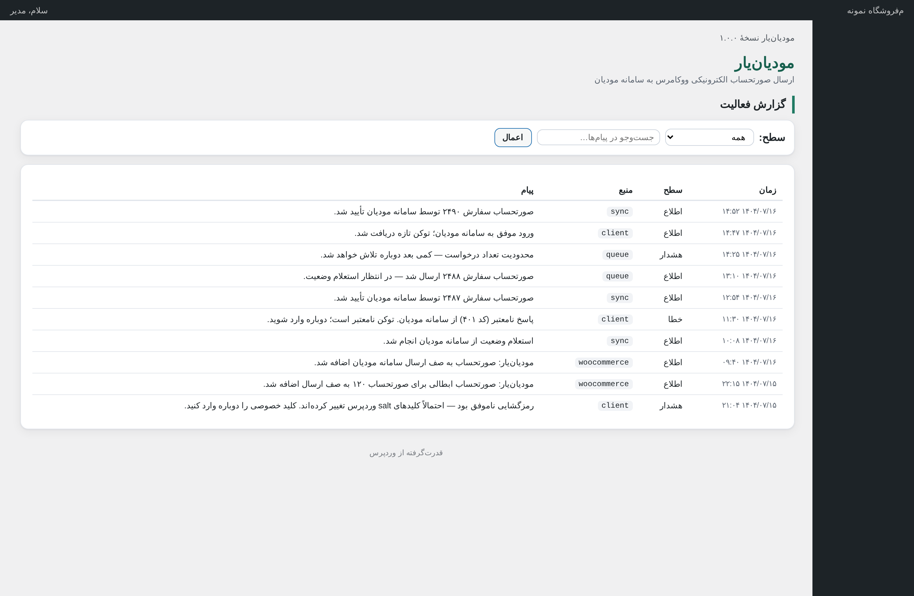
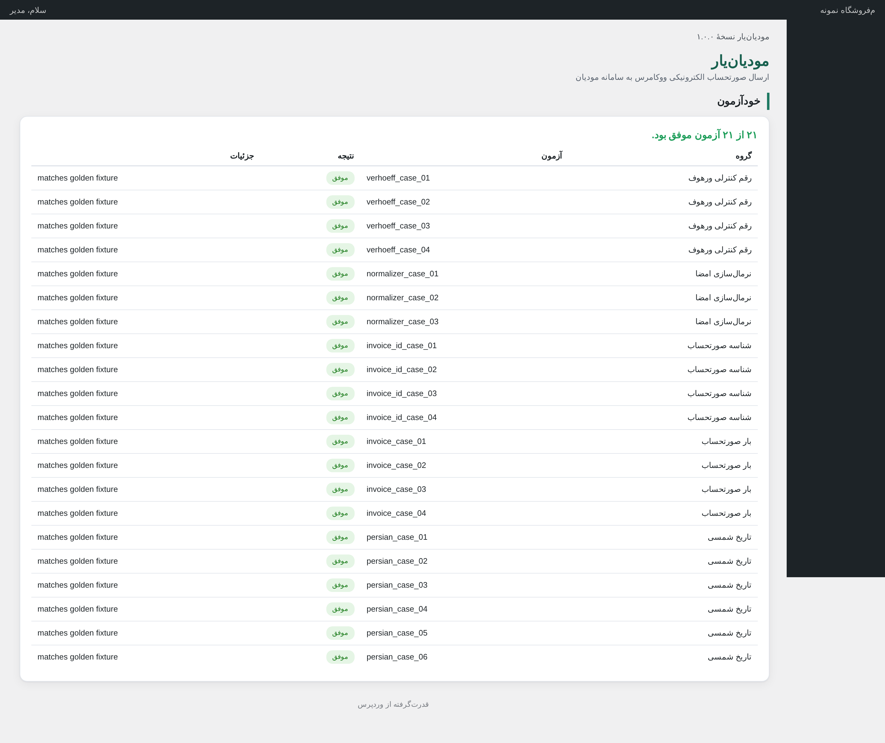

افزونهٔ اتصال مستقیم ووکامرس به سامانهٔ مودیان سازمان امور مالیاتی — هر سفارش، خودکار به صورتحساب الکترونیکی تبدیل میشود، با کلید خصوصی شما امضا میشود و تا تأیید نهایی پیگیری میگردد. بدون کپی دستی، بدون نرمافزار جانبی، بدون واسطه.

مودیانیار فقط «ارسالکننده» نیست؛ کل چرخه — صدور، امضا، ارسال، استعلام، ابطال و گزارش — را مدیریت میکند.
سفارش به وضعیت دلخواه شما (مثلاً «تکمیلشده») میرسد؛ صورتحساب نوع اول یا دوم طبق تنظیم شما ساخته میشود.
بستهٔ صورتحساب با کلید خصوصی شما امضای دیجیتال و رمزنگاری میشود؛ کلید با AES-256 در سایت خودتان محافظت میشود.
خطاهای موقت با فاصلهٔ هوشمند دوباره تلاش میشوند (تا سقف ۲۴ ساعت) و خطاهای دائمی با ترجمهٔ فارسی و راهحل نمایش داده میشوند.
هر ۵ دقیقه وضعیت از سامانه پرسیده میشود: موفق / ناموفق / در انتظار؛ مرجوعی کامل خودکار به صورتحساب ابطالی میرسد.
فقط ۴ مورد، همهٔ آنها از کارپوشهٔ سازمان امور مالیاتی (my.tax.gov.ir) به دست میآید و همه در صفحهٔ «تنظیمات» افزونه، در بخش «اعتبارنامهها» وارد میشود:
شناسهٔ ۱۱ رقمی کسبوکار شما که سامانهٔ مودیان صورتحسابها را به آن وابسته میکند.
منبع: کارپوشه → اطلاعات مودینام کاربری سامانهٔ مودیان که هنگام فعالسازی مودیان از طریق پیامک برای مودی ارسال میشود.
منبع: پیامک فعالسازی / پشتیبانی مالیاتیرمز عبوری که همراه نام کاربری صادر شده و برای دریافت توکن دسترسی استفاده میشود.
منبع: پیامک فعالسازی / پشتیبانی مالیاتیکلید رمزنگاری که برای امضای هر بستهٔ صورتحساب لازم است؛ یک متن طولانی رمزنگاریشده است.
منبع: کارپوشه → سامانهٔ مودیان → امضای دیجیتالهر چیزی که قانون پایانههای فروشگاهی از یک فروشگاه اینترنتی میخواهد — یکجا، فارسی و بیدردسر.
نوع اول، نوع دوم و ابطالی — مرجوعی کامل بهصورت خودکار به صورتحساب ابطالی با ارجاع به شناسهٔ صورتحساب اصلی میرسد.
ارسال خودکار هنگام تغییر وضعیت سفارش، ارسال دستی و ارسال انبوه از فهرست سفارشهای ووکامرس.
تلاش مجدد هوشمند (۵ دقیقه × ۲ بهقوهٔ تعداد تلاش، تا سقف ۲۴ ساعت) + حالت «نیاز به بررسی» برای موارد خاص.
وضعیت هر صورتحساب از سامانه پرسیده میشود: موفق / ناموفق / در انتظار / تایماوت — بدون دخالت شما.
امضای دیجیتال + رمزنگاری بستهها؛ کلید خصوصی هرگز بهصورت خام ذخیره نمیشود و با AES-256 در سایت خودتان رمزنگاری میشود.
تست کامل چرخه بدون ریسک + آزمون اتصال با نمایش اطلاعات حافظهٔ مالیاتی — از روز اول.
شناسهٔ کالا/خدمت، نرخ مالیات و عوارض، واحد سنجش، معافیت + ویرایش گروهی و پیشفرض دستهبندی.
فیلد شناسه ملی/کد اقتصادی خریدار با اعتبارسنجی — صورتحساب نوع دوم برای مشتریان سازمانی.
تفکیک نرخ مالیات، معاف/مشمول، ابطالی + خروجی CSV مستقیم قابل باز شدن در اکسل برای حسابدار.
با شمارهٔ مرجع سامانه و راهنمای راستیآزمایی — بدون ورود، از ایمیل یا حساب کاربری.
هر فروشنده اعتبارنامه و شناسهٔ مالیاتی خودش را وارد میکند؛ صورتحساب زیرسفارشها با شناسهٔ همان فروشنده صادر میشود.
سازگار با جدول سفارشهای اختصاصی ووکامرس؛ رابط کامل RTL فارسی — در هر سایتِ با هر زبانی، فارسی و راستچین میماند.
مودیانیار هر دو مسیر رسمی سامانه را پشتیبانی میکند — هم آداپتور TSP (self-tsp) و هم requestsmanager/api/v2. انتخاب آداپتور با یک کلیک از تنظیمات انجام میشود و اگر سازمان مسیر جدیدی را الزامی کند، فقط همان تنظیم را عوض میکنید.

همهٔ تصاویر از نسخهٔ واقعی افزونه گرفته شدهاند — با دادهٔ نمونه.





پاسخ کوتاه به چیزی که بیشتر از همه میپرسند.
بله. «محیط آزمایشی» بهصورت پیشفرض روشن است و کل چرخه (ارسال، استعلام، ابطال) را به نشانی آزمایشی سامانه میفرستد. تنظیمات، اطلاعات مالیاتی محصولات و گزارشها را از همین امروز مرتب میکنید و وقتی اعتبارنامه رسید، فقط ۴ فیلد را در تنظیمات پر میکنید.
کلید خصوصی هرگز بهصورت متن خام ذخیره نمیشود؛ با AES-256 در پایگاه دادهٔ سایت خودتان رمزنگاری میشود و کلید رمزنگاری از salt اختصاصی وردپرس همان سایت ساخته میشود. هیچ دادهای به سرور واسطهای فرستاده نمیشود و افزونه مستقیم با سامانهٔ مودیان حرف میزند.
بله — مرجوعی کامل بهصورت خودکار صورتحساب ابطالی با ارجاع به شناسهٔ صورتحساب اصلی صادر و ارسال میکند و در گزارش ماهانه هم دیده میشود. ابطال دستی از صفحهٔ سفارش هم ممکن است.
هر فروشنده اعتبارنامه و شناسهٔ مالیاتی خودش را در تنظیمات دکان وارد میکند و صورتحساب زیرسفارشهایش با شناسهٔ همان فروشنده صادر و ارسال میشود — دقیقاً همان چیزی که سامانه از مارکتپلیسها انتظار دارد.
وردپرس + ووکامرس (سازگار با HPOS)، PHP نسخهٔ ۷.۴ یا بالاتر و برای بهرهبرداری واقعی، اعتبارنامهٔ سامانهٔ مودیان. راهنمای فارسی ۱۶ صفحهای همراه افزونه، مسیر دریافت اعتبارنامهها را گامبهگام نشان میدهد.